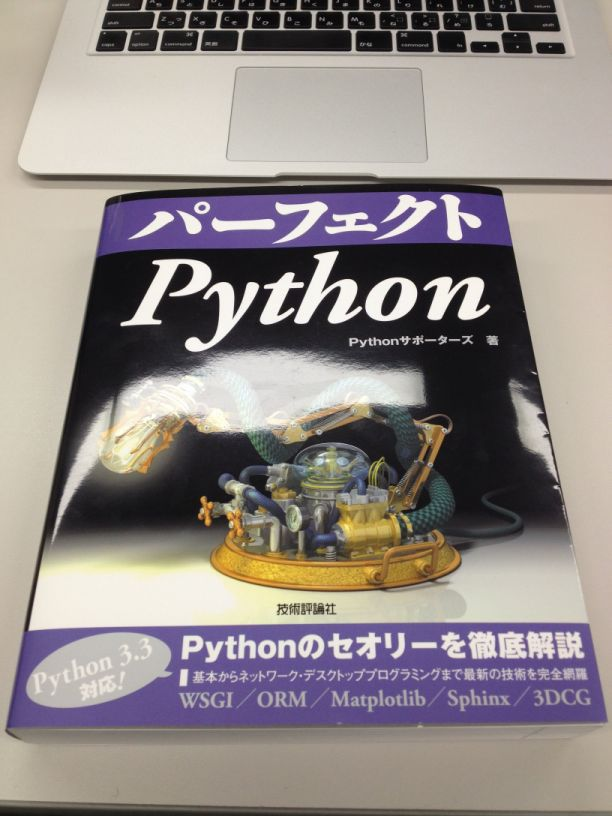

パーフェクトPython
先日のBPStudy66で頂いた パーフェクトPython
{kind=link}

大切に大切に読もうと思っていたら、
- 「レビューはよ」
- 「レビューまだー？」
- 「えーー発売前のレアなレビューなのにーーー(プレッシャー」
と煽りを受けたので書いてみます。
本の構成
1. Python ~overview~
Python3について、Pythonがどのように使われてきたか、Pythonの特徴などが書かれていますが、特に目を引くのはPythonの精神である Zen of Python の説明に多くのページを割いていることでしょう。この一つ一つについてにPerlやRubyのソースコードと比較したり、事例を交えながらの紹介になっています。これからPythonを学ぶにあたり一度は見ておきたいものが書かれています。
2. 言語仕様
Pythonの基本から始め、クラスやモジュール、標準ライブラリまでを知ることができます。最後のコラムではIDEについても触れられています。筆者の周りにはテキストエディタを使っている人が多いと前置きした上でPyDevとPyCharmなどが紹介されていました。
3. 実践的な開発
実際に対面しうる問題についてPythonでどのように立ち向かうのかが解説されています。実際にToDoリストを作りながらコマンドラインアプリケーションを作ったり、GUIプログラミング、アプリケーションの配布、テスト、Webプログラミングについて触れられています。
4. 適用範囲
特定領域に特化した問題を解決するためのTipsが紹介しています。初めて名前を聞くようなものも入っていました。そのサードパーティツールを使うことでどのようなことができるのかを知ることができます。
5. Appendix
本書内で必要となる環境の整え方を詳細に紹介しています。本書ではWindows7, Ubuntu12.04LTS, Mac OSX10.8に対応しており、それぞれのケース毎に説明されています。
2013年はPythonの年
- 【プログラミング】2013年はPython(ヘビ)の年！人気のプログラミング言語Python - NAVER まとめ
- 全てのwebエンジニアがPythonを勉強するべき2013年到来
- 全てのエンジニアがPythonを勉強するべき2013年到来 - secretbase.log
2013年は巳年ということもあり、全てのプログラマがPythonを学ぶべき年と言っても過言ではありません。パーフェクトPythonは「今年こそPythonを学びたい！」と思う全ての方におすすめしたい本になっています。この本は「Pythonで〇〇をするにはどうすればいいんだろう」という問いにしっかりと答えてくれる本です。
つい先日PythonのWebフレームワークの代表的存在であるDjangoも、ついにPython3系に対応しました。Pyramidは既にPython3に対応しています。この本でPythonについての知見を深め、もう一歩を踏み出してみませんか:D
BPStudy66に参加して来ました
テーマ変更してみました。
当日のイベントページはこちら→ BPStudy#66 - connpass
パーフェクトPython貰った！
しょっぱなからアクシデントがあり、発表者の akisutesama がいらしていないという状況。 そんな中Pythonサポーターズの一人 atsuoishimoto によるじゃんけん大会が行われました。商品は現在予約受付中の パーフェクトPython ！
そして……

貰ってしまいました！ (蛍光灯の光が反射してるのは気にしないでください……)
ありがとうございます。勉強させて頂きます:D
当日の様子
さてこのあと当日のまとめなどを書こうとしましたがスライド以上にまとめられる気がしないので、 資料だけ載せさせて頂きます。
Goのススメ 21世紀のプログラミング言語
Client & Server side of Dungeons and Golf
(第28回)Python mini Hack-a-thon に参加してきた。
当日のイベントページはこちら→ (第28回)Python mini Hack-a-thon - connpass
本当は午前中から参加したかったんですが、午後からの参加でした。 荷物の受取が午前中に届く予定さえなければ……
当日やったこと
- Django1.4 Tutorial
- TinkererのRSS設定修正
Django1.4 Tutorial
前日にDjango1.4は家でインストール済みの状態からスタート。
さあ始めましょう の「Djangoの概要」から始め、「はじめての Django アプリ作成、その3〜実際に動くビューを作成する」に手をつけた始めた所で時間切れでした。
以前Django1.2の頃、Django1.0の日本語ドキュメントを元にTutorialやった際はDBの設定をいじるあたりでうまくいかなくて投げ出した思い出があります。当時はバージョンの差異を意識してやらないとなと教訓にはなりましたが、やはり固まった情報をネイティブの言語で学べるのは重要ですね……
一番新しい情報を知ろうと思うと英語は必須ですが、その分野に詳しくなかったり初めて学ぶことはネイティブの言語で一度しっかり学ぶと違うと思いました。(そもそも英語で不自由がなければ問題ないのですがね)
TinkererのRSSの設定修正
Django1.4 Tutorialをしている最中に急に思い立ってやりました。
以前BlogのURLを変更した際、RSS( Google FeedBurner )の設定を修正するのを忘れていまして、連携しているFacebookアプリ “RSS Graffiti” から 「Action Required: Your RSS Graffiti Facebook Permissions have expired!」と怒られました。
そこでconf.pyとFeedBurnerの設定を変更して、ちゃんとRSSでBlogの更新を取得出来るようにしまし た。(この記事の更新がちゃんと取得できてれば問題ないはず。)
pyhack終了後
懇談会に参加しました。久しぶりにお会いする人、話す人、思わぬローカルネタで盛り上がった人、仕事あるあるネタ、壁の話、某B社ネタ、etc……ただの酔っ払いの集まりになっていた気がしなくもないですが、なんだがあっという間に過ぎ去った3時間でした。
平日に勉強会やコミュニティに参加しにくくなってしばらく立ちまして、その間も色々あったり思ったりとしましたが、やはりこうゆう場にでるのは楽しいですね。また参加できればと思います。